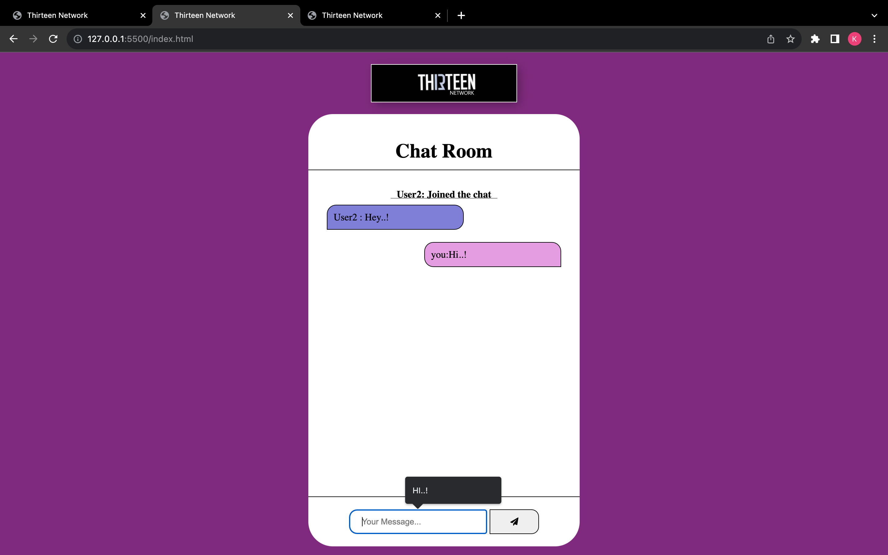
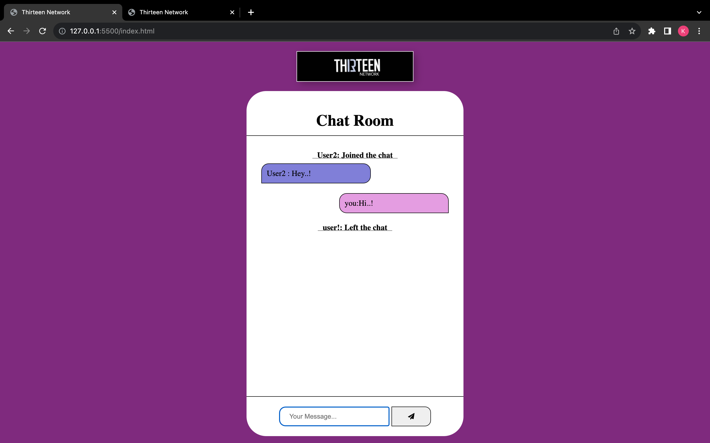
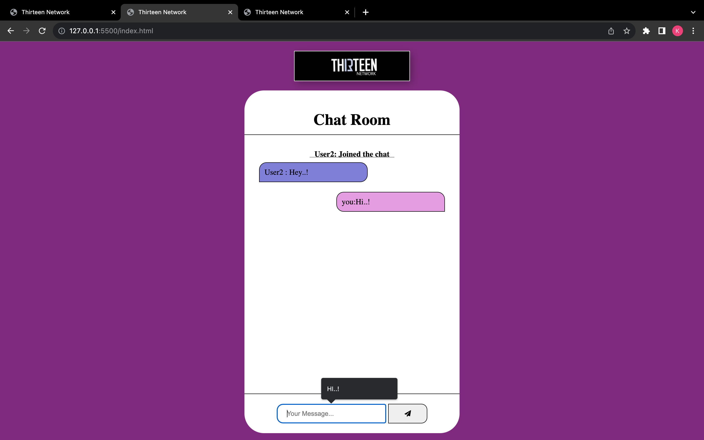
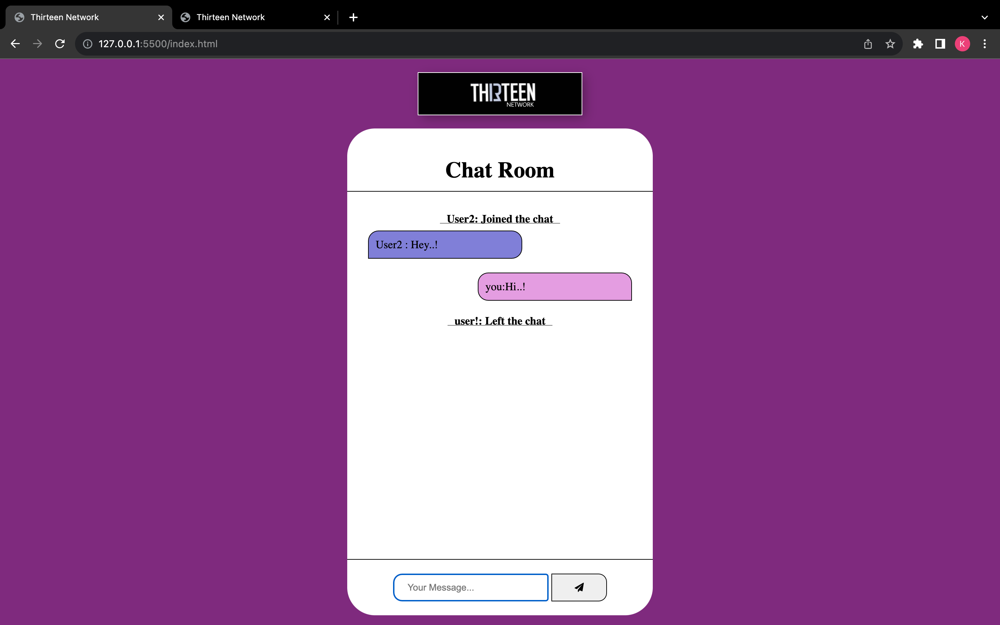
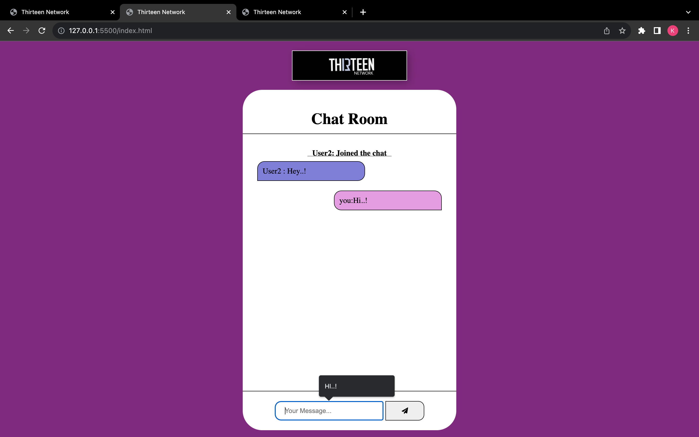
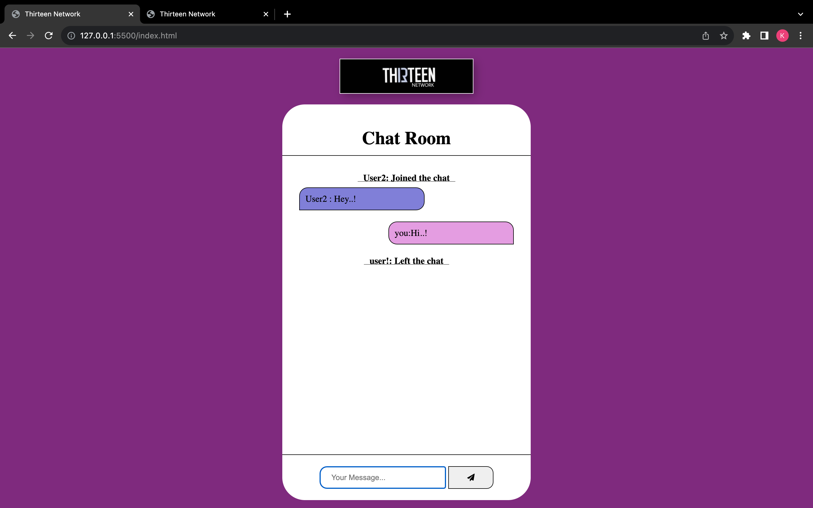
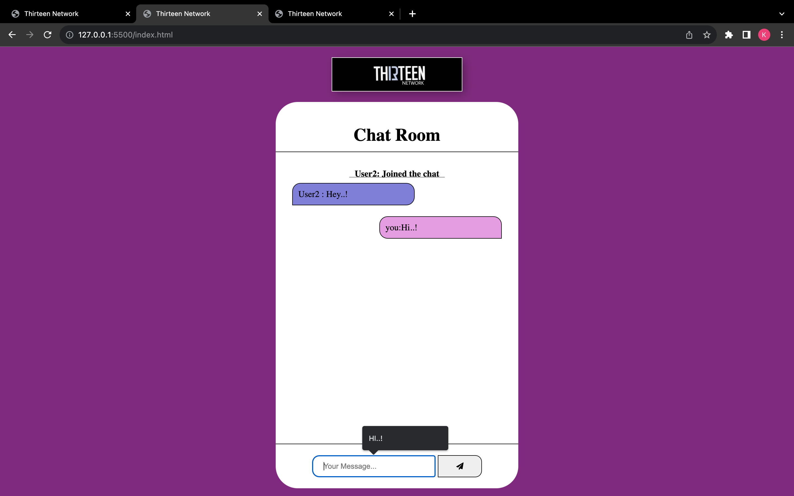
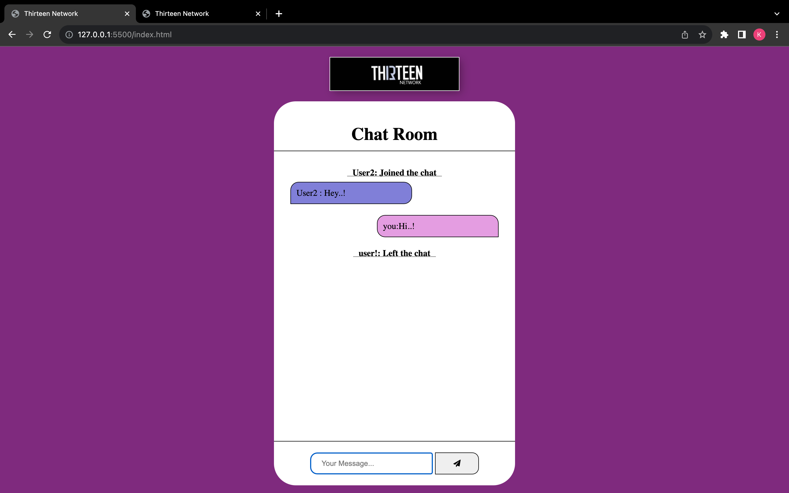
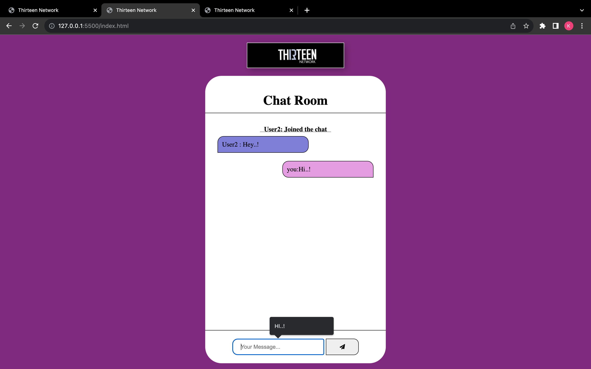
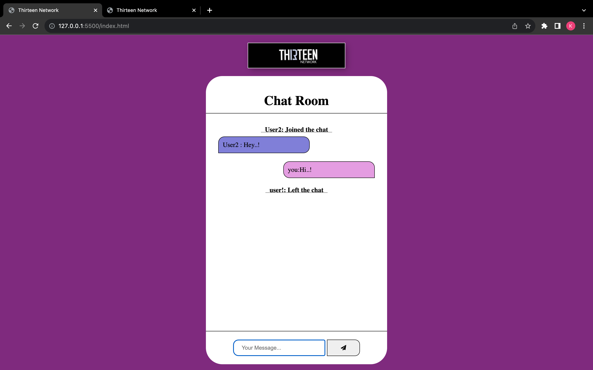

A chat room built upon the User Datagram Protocol (UDP) provides a dynamic platform for real-time communication. By embracing UDP's connectionless nature, this chat room model offers unique advantages and challenges.
UDP's lean approach to data transmission underscores the efficiency of such a chat room. The absence of connection establishment overhead allows messages to be swiftly exchanged between participants, fostering instant interactions. This makes UDP-based chat rooms particularly well-suited for scenarios requiring rapid responses, like multiplayer gaming discussions or live event commentaries.
Furthermore, the simplicity of UDP lends itself to scalability. As the number of participants increases, a UDP chat room remains resilient due to its reduced server-side complexity. Broadcasting messages to all participants simultaneously is effortless, facilitating lively group conversations without straining the network.


A chat room implemented using the User Datagram Protocol (UDP) offers a lightweight and efficient communication platform. UDP, being connectionless and not guaranteeing data delivery, is suitable for real-time interactions. This chat room model has both merits and limitations.
We have developed faculty feedback system to provide feedback in an easy and consistent manner to the college HOD or principal. We call it faculty feedback system which delivers via student staffs interface as online system which is acting as Service Provider.